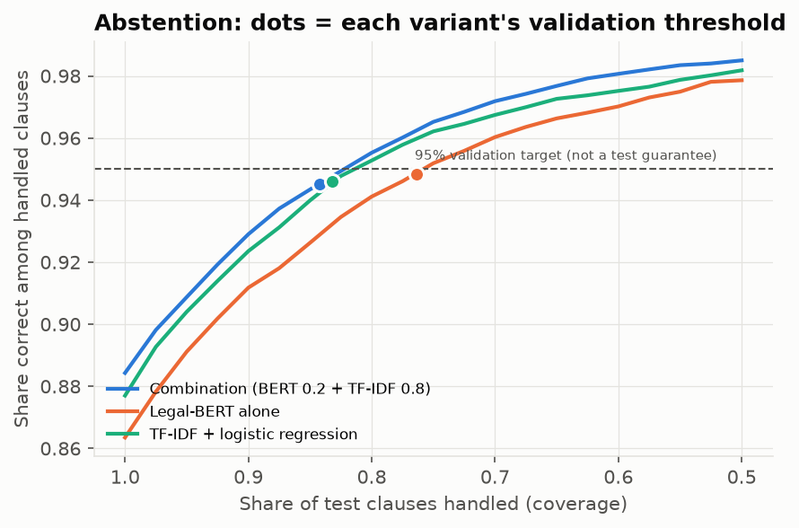
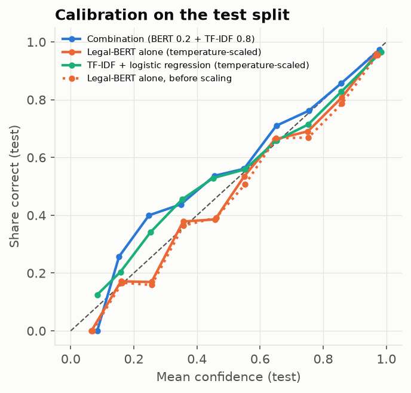
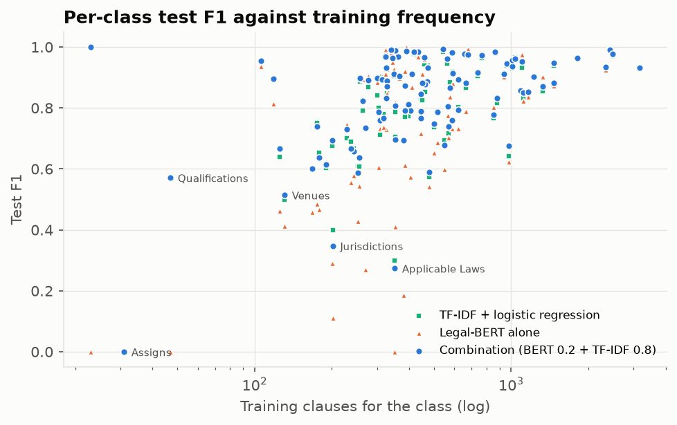
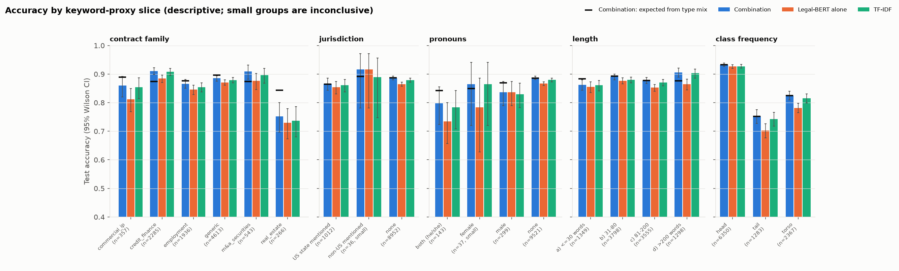
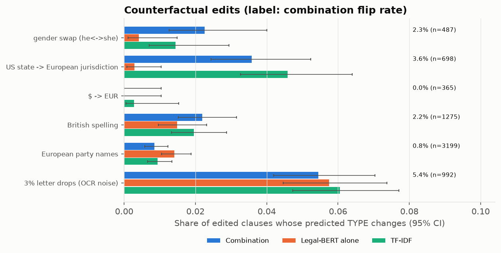
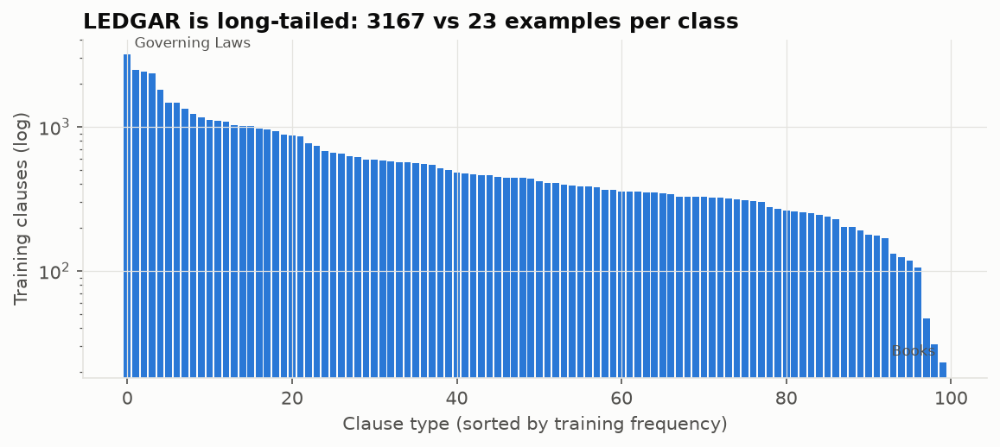
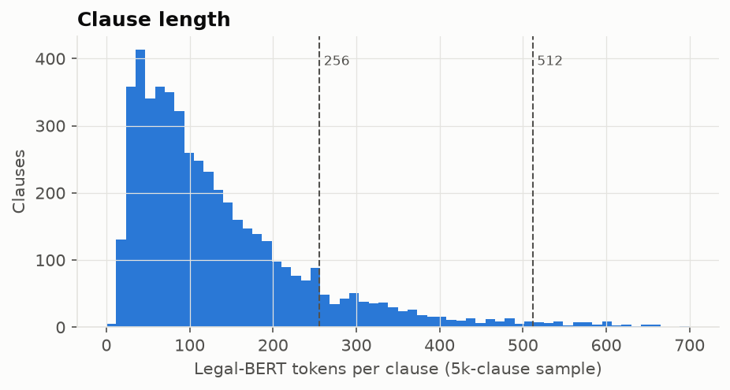

On LEDGAR, a clause's type often hinges on a few keywords: “governing law”, “counterparts”, “severability”. A lexical model captures them very well.
Published reference (LexGLUE, Chalkidis et al. 2022, Table 3): TF-IDF + SVM 87.0 / 81.4.
| Choice | Value | Reason |
|---|---|---|
| Model | legal-bert-base-uncased | legal English; CamemBERT is French |
| Length | 256 tokens | 88% of clauses kept whole; 512 saturated 16 GB |
| Budget | 2 epochs · 1 seed (42) | Apple M3 laptop, 146 min |
| Optim. | AdamW 3·10⁻⁵, warm-up 6%, bf16 | standard BERT recipe |
| Loop | hand-written PyTorch | length-bucketed batches, resumable checkpoints |
macro-F1: 74.0 (epoch 1) → 77.6 (epoch 2)
It was still rising. Values from the training trace (definition used at the time: present labels only).
A single process, step 0 → 7,500, with no resume (proven by the log). Resume tested on CPU only.
5 / 5 results of type Terminations, each with a thirty-day notice.
Recommendation: internal pilot, English clauses, lawyer in the loop, abstention enabled.
Useful for triage, not for decisions.






